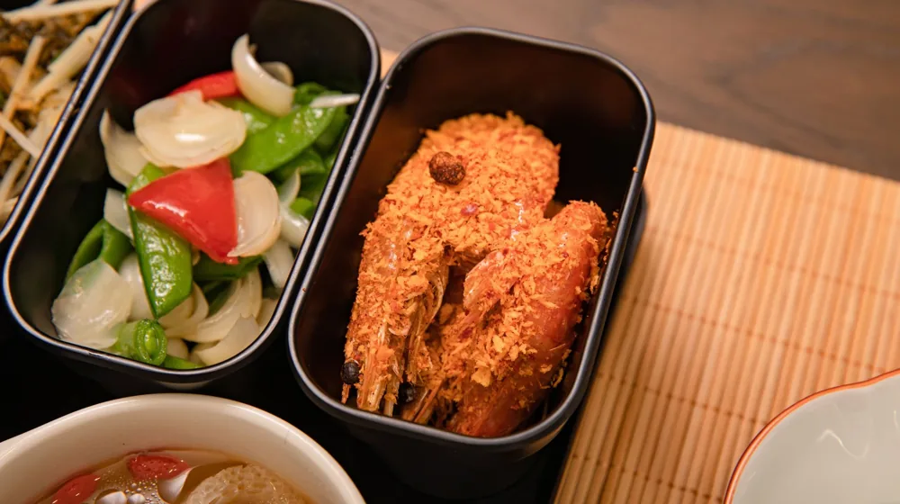

내 체질에 맞는 음식? 태양인부터 소음인까지 속 시원한 체크리스트
사진: FOX ^.ᆽ.^= ∫ / Pexels (무료 이미지, 출처 표기)
내 체질에 맞는 음식? 태양인부터 소음인까지 속 시원한 체크리스트

사상체질에 맞춰 음식을 섭취하는 것이 건강에 도움이 된다는 이야기는 많이 들어보셨을 겁니다. 하지만 막상 나의 체질이 무엇인지, 그리고 그 체질에 어떤 음식이 맞고 안 맞는지 헷갈리는 경우가 많습니다. 이 글은 태양인, 소양인, 태음인, 소음인 각 체질의 특징을 바탕으로, 2026년 8월 기준 각 체질에 도움이 되는 음식과 피해야 할 음식을 구체적인 체크리스트로 정리해 드립니다.
사상체질이란 무엇인가요?
사상체질은 조선 후기 한의학자 이제마 선생이 창시한 독특한 한의학 이론입니다. 사람의 체질을 크게 태양인, 소양인, 태음인, 소음인 네 가지로 분류하며, 단순히 외형적인 특징뿐만 아니라 타고난 장부의 기능 강약, 심리적 특성, 병에 대한 반응 등을 종합적으로 고려합니다.
이 이론은 각 체질마다 신체 기능의 강점과 약점이 다르기 때문에, 건강을 유지하기 위해서는 체질에 맞는 음식, 약재, 생활 습관이 필요하다고 봅니다. 내 체질을 정확히 알면 불균형을 해소하고 건강을 증진하는 데 큰 도움이 될 수 있습니다.
태양인에게 어울리는 음식과 피해야 할 음식
태양인은 폐 기능이 강하고 간 기능이 약한 체질로 알려져 있습니다. 상체가 발달하고 하체가 약한 경향이 있으며, 결단력이 강하고 추진력이 좋으나 화를 잘 내는 특징을 보입니다. 열이 많은 체질이므로 담백하고 시원한 성질의 음식이 좋습니다.
- 추천 음식: 메밀, 냉면, 해산물(조개, 새우, 굴 등), 채소(셀러리, 케일), 과일(포도, 감, 다래, 모과), 등 푸른 생선
- 피해야 할 음식: 고기류(쇠고기, 돼지고기), 맵고 뜨거운 음식, 지방질이 많은 음식, 밀가루 음식, 인삼, 꿀
소양인에게 어울리는 음식과 피해야 할 음식
소양인은 비장 기능이 강하고 신장 기능이 약한 체질입니다. 상체가 발달하고 어깨가 넓지만 허리 아래가 약한 편이며, 성격이 급하고 시원시원합니다. 몸에 열이 많으므로 차갑고 시원한 성질의 음식이 체질 균형에 도움이 됩니다.
- 추천 음식: 보리, 팥, 녹두, 오이, 가지, 수박, 참외, 딸기, 바나나, 해삼, 전복, 돼지고기, 오리고기, 게
- 피해야 할 음식: 고추, 생강, 마늘, 파 등 맵고 자극적인 양념류, 닭고기, 개고기, 인삼, 꿀, 부자 등 열성 식품
태음인에게 어울리는 음식과 피해야 할 음식
태음인은 간 기능이 강하고 폐 기능이 약한 체질입니다. 몸집이 크고 체격이 건실하며, 소화 기능이 좋아 음식을 잘 받아들입니다. 너그럽고 침착하지만 게으르기 쉽습니다. 소화력이 좋지만 비만해지기 쉬워 담백하고 소화하기 쉬운 음식이 좋습니다.
- 추천 음식: 쇠고기, 버섯류(표고, 느타리), 콩, 밀, 수수, 율무, 현미, 채소(무, 당근, 배추, 도라지), 해조류, 배, 밤, 은행, 잣
- 피해야 할 음식: 닭고기, 돼지고기, 개고기, 등 푸른 생선, 찬 음식, 밀가루 음식, 고지방 음식, 인삼
소음인에게 어울리는 음식과 피해야 할 음식
소음인은 신장 기능이 강하고 비장 기능이 약한 체질입니다. 몸집이 작고 마른 편이며, 소화 기능이 약해 냉한 음식을 피하는 것이 좋습니다. 섬세하고 내성적이며 꼼꼼한 성격을 가집니다. 따뜻한 성질의 음식을 섭취하여 몸을 보하는 것이 중요합니다.
- 추천 음식: 찹쌀, 조, 감자, 닭고기, 양고기, 염소고기, 미역, 다시마, 파, 마늘, 생강, 고추, 사과, 복숭아, 대추, 꿀, 인삼
- 피해야 할 음식: 보리, 밀, 메밀, 녹두, 팥, 돼지고기, 오징어, 냉면, 참외, 수박, 찬 음료, 찬 우유
사상체질별 어울리는 음식 한눈에 보기
각 체질별로 추천하는 음식과 피해야 할 음식을 아래 표로 정리했습니다. 본인의 체질에 맞춰 건강한 식단을 계획하는 데 참고하시길 바랍니다.
내 체질, 어떻게 정확히 확인할 수 있을까?
온라인에서 제공되는 자가진단 테스트는 흥미 삼아 참고할 수는 있지만, 정확한 체질 진단으로 보기는 어렵습니다. 사상체질 진단은 외형, 성격, 병력, 체형 등 복합적인 요소를 한의학적 관점에서 종합적으로 분석해야 하므로 전문성이 요구됩니다.
본인의 정확한 사상체질을 확인하고 싶다면 가까운 한의원에 방문하여 한의사와의 상담을 통해 진단을 받는 것이 가장 확실합니다. 한의사는 체질 진단뿐만 아니라 개인의 건강 상태에 맞는 식단과 생활 습관에 대한 전문적인 조언도 함께 제공해 줄 것입니다. 정확한 사항은 전문가와 상담하시길 권장합니다.
🔗 이 글도 함께 보면 좋아요: 필라테스 vs 요가, 나에게 딱 맞는 운동은? 5가지 핵심 차이 비교
관련 추천 상품
이 포스팅은 쿠팡 파트너스 활동의 일환으로, 이에 따른 일정액의 수수료를 제공받습니다.